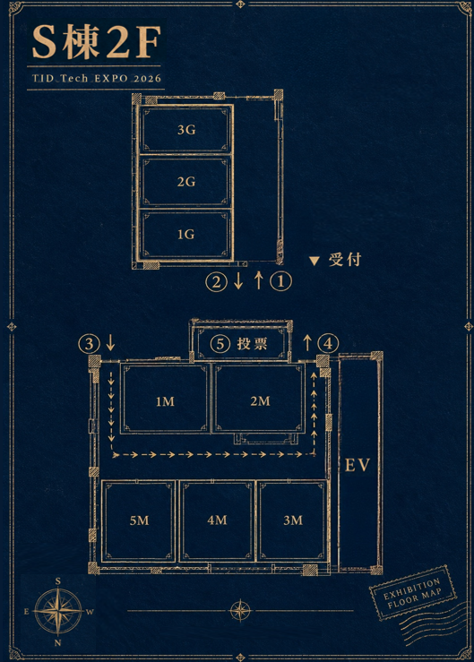

学生および教員による制作物、研究発表パネル、デモアプリ、メディアアート等のブース展示。
参加した学生・教員・ゲストによるリアルタイムな作品投票企画を実施。
来場者投票や審査結果に基づき、優秀な研究・制作物にアワードを授与予定！
社会基盤の遠隔点検や農薬散布、空撮等の産業分野向けのドローンでは、航行の安全性確保は社会・経済活動上、先送りできない課題となっています。機体にセンサー等機材を装着することなく、機体の健全性を日常的に点検可能とし、飛行の安全性を客観的に評価する枠組みを目指しています。
キーボードの各キーを個別に光らせるための、シンプルな照明システムを開発しました。色の生成に色フィルタを利用することで、キーごとの色制御を簡素化している点が特徴です。システムの仕組みと試作機を紹介し、入力支援や教育用途への応用可能性を示します。
高性能な振動センサーである圧電センサーを用いて、非拘束で生体信号を取得するデモを行います。得られた生体信号の応用技術も研究中の技術として解説します。
高齢化が進む地域の介護施設等において、健康麻雀を通してシニアが自らの経験や知恵を活かし、自立して暮らせる社会の実現を目指す。身体性とLLMが融合した本システムを導入することで、シニアに「AIに戦術を教える先生」という能動的な役割と生きがいを提供する。
所属する4年生5名の研究テーマを1枚構成のポスターにまとめ、研究の背景・目的・手法・結果を図表とともに分かりやすく掲示します。来場者が一目で内容を理解できる構成としています。
江戸川区が展開する「江戸川区メタバース区役所」というVRワールドと協力し、より良いものにするプロジェクトを実施。職員のアバターがユーザーに与える印象を調査し、ユーザーが安心して相談できるアバターとは何かを研究している。
テレビやゲーム、3D映像、AR/VRなど、映像による好ましくない生体影響（光感受性発作、3D視覚疲労、映像酔い/VR酔い）の軽減に向けた国際標準化の取り組みを紹介し、具体的な体験を通して理解を深める展示です。
映像に合わせて色や振動が変化するペンライト型デバイス「i-棒」の体験展示です。振る・光る・振動するという身体動作を通じて、映像視聴に参加する感覚がどう変わるかをぜひ試してみてください。
出展ブースは「モーションキャプチャルーム」と「学習支援センター」の2会場に分かれています。当日はマップを参考にお越しください。

画像をクリックすると拡大表示されます